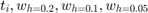
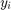
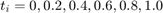
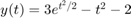
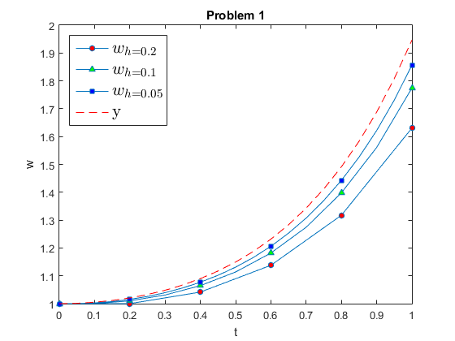

Lab 11 Solution
Lab Instructor: Valeria Barra
Contents
DUE Tuesday 04-12-2016 ;
Problem 1: Euler's Method
Reproduce the first table in Example 6.2 in your textbook, with columns , the actual solution  and the error , all at the same grid points . To compute the error at each grid point use the value for the actual solution given .
Solution:
clear all; close all; % function handle of the RHS function for the problem f=@(t,y)(t.*y + t.^3); % the actual solution y=@(t)( 3*exp((t.^2)./2) - t.^2 -2); h=[0.2 0.1 0.05]; % the IC given w0=1; Markers = ['o' '^' 's']; % just different symbols to plot Colors = ['r' 'g' 'b']; % different colors used for the different markers % print the header of the table fprintf('\nExecution of Problem 1, \n') fprintf('__________________________________________________________________________________________\n\n') fprintf('t w_{h=0.2}(t_i) w_{h=0.1}(t_i) w_{h=0.05}(t_i) y_i Error w_{h=0.05} \n') fprintf('__________________________________________________________________________________________\n') % the main cycle of the call of the function and display starts here for j=1:length(h) t{j}=(0:h(j):1); % domain % the call of the method w{j}=Euler(f, t{j}, w0,h(j)); % plots of all the approximations here line_fewer_markers(t{j},w{j},6,Markers(j),'MarkerFaceColor',Colors(j),'MarkerSize',5); hold on % plotting here if j==length(h) plot(t{j},y(t{j}),'--r') % plots the real solution only the last time end end % now we only read those values that we want to display for i=1:length(h) TPrint{i}=t{i}(1:h(1)/h(i):end); % select only the values we want to print in the table WPrint{i}=w{i}(1:h(1)/h(i):end); % select only the values we want to print in the table if i==length(h) Error=abs(y(TPrint{i}) - WPrint{i}); % error calculated point-wise only with the third execution end end % print the table table=[(TPrint{1,3})' (WPrint{1,1})' (WPrint{1,2})' (WPrint{1,3})' (y(TPrint{1,3}))' (Error)']; fprintf('%2.1f %6.4f %6.4f %6.4f %6.4f %6.4e \n',table') %end of table line fprintf('__________________________________________________________________________________________\n') p= log2((WPrint{1,2}(end) - WPrint{1,1}(end))/(WPrint{1,3}(end) - WPrint{1,2}(end))); fprintf('The order of converegnce at the point t_i =1 is p = %4.2f. That is roughly 1.\n',p) % attributes of the figure here title('Problem 1') xlabel('t') ylabel('w') box on legend({'$w_{h=0.2}$','$w_{h=0.1}$','$w_{h=0.05}$','y'},'interpreter','latex','fontsize',16,'location','northwest');
Execution of Problem 1,
__________________________________________________________________________________________
t w_{h=0.2}(t_i) w_{h=0.1}(t_i) w_{h=0.05}(t_i) y_i Error w_{h=0.05}
__________________________________________________________________________________________
0.0 1.0000 1.0000 1.0000 1.0000 0.0000e+00
0.2 1.0000 1.0101 1.0153 1.0206 5.3097e-03
0.4 1.0416 1.0647 1.0770 1.0899 1.2837e-02
0.6 1.1377 1.1819 1.2060 1.2317 2.5640e-02
0.8 1.3175 1.3979 1.4428 1.4914 4.8545e-02
1.0 1.6306 1.7744 1.8562 1.9462 8.9918e-02
__________________________________________________________________________________________
The order of converegnce at the point t_i =1 is p = 0.81. That is roughly 1.
 Comments on results: We can see that Euler's explicit scheme is only of order one. In fact, as h is halved for each execution, also the corresponding error for each grid point is roughly halved.